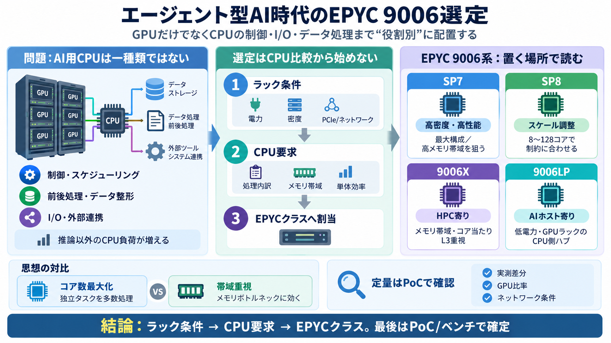

AMD EPYC 9006 Venice: 256 Cores, $14,904 Zen 6 Chip [2026]
AMD has laid out a staggered rollout. SP7 systems, the higher-core-count platform, are expected in the fourth quarter of…

Agentic AI × CPU選定
エージェント型AIの普及を見据え、GPUだけでなくCPU側の処理・I/O・電力/密度まで含めて、EPYC 9006（Venice）系をどこに当てるかを整理する。
“AI用CPU”は一種類?
エージェント型AIでは、推論だけでなくワークフロー制御・データ処理・連携が増え、CPUの負荷が周辺へ波及する。
置き場所が結論
データセンターは“どこにでも同じ構成”にならない。ラック設計が違えば、CPUに求める強み（帯域/単体/高密度）が変わる。
定義を締める
CPUという語を広げすぎるとBMCや周辺機器まで含み議論が崩れる。そこで実務に合わせて「CPU搭載主体」に絞って整理する。
製品レンジは複数
Venice（EPYC 9006系）内でもソケット/クラスを分け、狙うデータセンターの形が異なるという見立てを置く。
なぜCPUが要る?
エージェントはタスク分解・計画・データ取り込み・ツール呼び出し・外部連携を行うため、CPU側の処理が増える。
思想の対比
一方はソケットにvCPUを詰める発想、もう一方はコア数を抑えてメモリ帯域や1コア当たり効率を最大化する発想。
9006X vs 9006LP
9006XはHPC寄り、9006 LPはAIホスト寄りとして語られ、要求される設計最適点が異なる可能性がある。
選定の手順
CPU比較を先に始めるのではなく、ラック/ノードの制約→求める強み→EPYCクラス、の順で当てはめる。
定量の注意点
提案は有益だが、提示範囲では同一条件の多ベンダ横断ベンチや実デプロイの数値が十分に展開されていない可能性がある。
取り入れ方
マッピング枠組みは、電力・密度・ラック単位の制約を意識した実務寄りの整理として有用。ただし最終判断は検証が必要。
結論
エージェント型AIはGPUだけでなくCPU側の制御・I/O・データ処理も押し上げる。だからこそ、SP7/SP8/9006X/9006LPを“どのラック/ノードの役割か”から選ぶ。
AMD has laid out a staggered rollout. SP7 systems, the higher-core-count platform, are expected in the fourth quarter of…
AMD says its newest server chip beat Intel’s flagship Xeon by more than double, and edged out a CPU built by a company t…
8. 9xx6-021: Rack-level general purpose performance comparison within a 100 kW rack power constraint based on AMD analys…
AMD announced the EPYC 9006 Venice on July 22, 2026, at the Advancing AI event in San Francisco. EPYC 9006 SP7 servers b…
Compared to the cores per rack of Nvidia Vera (88c) powered server racks: The AMD EPYC 9996 (256C) provides 2.08x t…